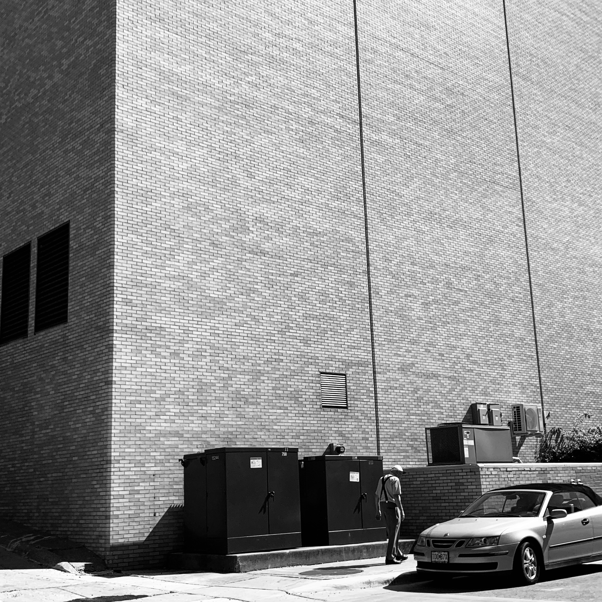

Filling the Gap
This is a project developed by the Columbia Missourian photography staff to identify and photograph areas of Columbia that have received little or no coverage in the past. Photographers found stories inside these “coverage gaps.” These galleries display their work and tell those stories.
Headline

A gentleman walks to his car in downtown Columbia on October 5, 2019.
Photographer: Qinghui Kong
Headline

The State Historical Society of Missouri Center on October 5, 2019.
Photographer: Qinghui Kong
Headline

Capation goes here.